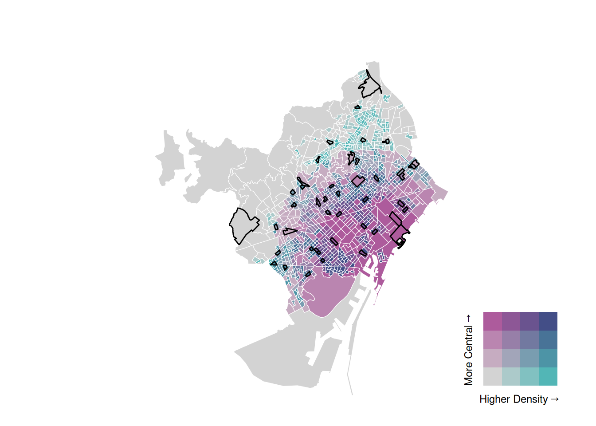

OSM validation method
Intro
Aim: validate OSM cycling infrastructure in Barcelona.
Sampling: random stratified sample of census tracts, stratified by centrality × density (3×3).
Within each sampled tract: draw random points on
- OSM cycleway network → detect false positives.
- OSM general road network → detect false negatives.
Validation: each point linked to Google Street View (GSV) + year.
Maps
- Map A: Stratified areas selected.
- Map B: Interactive map with validation points + clickable GSV.
Limitations observed (after checking the validation map)
GSV API only delivers the most recent image → no systematic access to historical imagery.
Coverage not up to date → many streets still show old shots (e.g. 2015).
Ambiguity at intersections → sometimes unclear if GSV is showing the correct street/direction.
Next steps (decision points)
Decide if we just abandone or try to write a demtodological paper.
Consider alternatives.